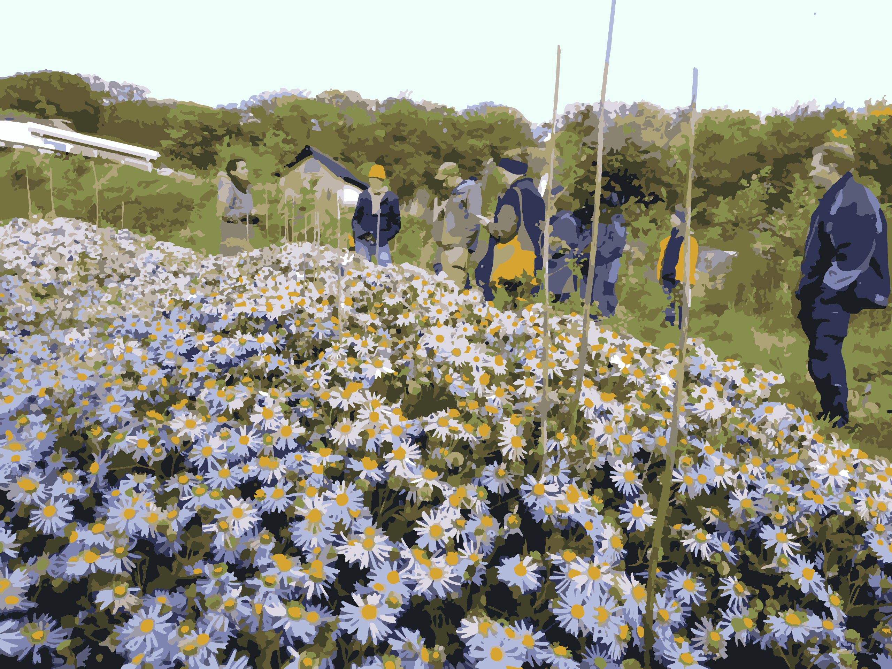
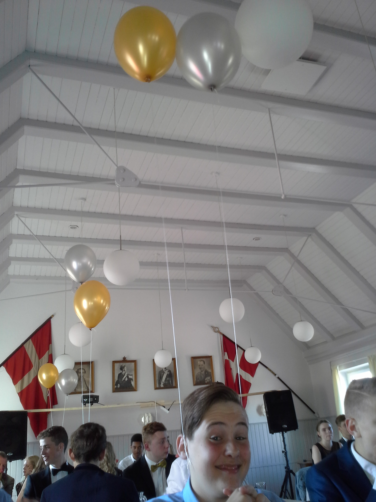
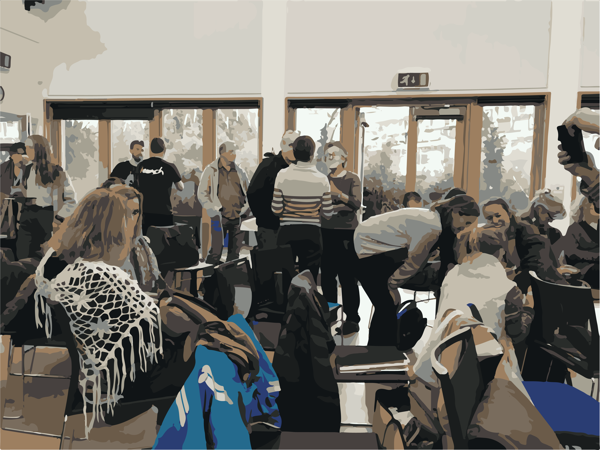
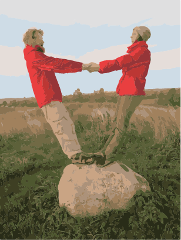
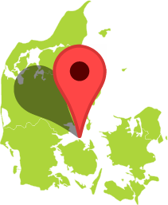

-
Hvem er vi
Permakultur Danmark (PKDK) er i 1990 blevet stiftet og blev formaliseret som en forening i 2011. Foreningen er en frivillig og non-profit organization. I løbet af de seneste år har vi oplevet en stigende interesse i permakulturen, og vi har set en medlemsning stigning fra 500 til 800 i perioden 2018-2020. Permakulturens felt er i konstant udvikling i engelsktalende lande, hvor den er kendt og udbredt. Hvor den nu også er i gang med at tage fart i Danmark, hvorpå den er blevet attraktiv for et bedre publikum som ønsker at følge permakulturens etik, og hvorpå man skaber sit levebrød på dens betingelser. Permakultur Danmark fungere som en vidensdeler, retningsgiver, samt samlepunkt for erfaringsudveksling, og er samtidig med til at kvalitetssikre og udvikle uddannelse, for de mange talrige permakulturelle interesseret der findes rundt i landet.
Vores vision:
Vi opfordrer til at paradigmeskift for at skabe et reelt bæredygtigt samfund, der tilgodeser naturs såvel som menneskets behov. Vi vil skabe en verden hvor vi passer på hinanden, kloden, og fremtidige generationer. Vi deler ressourcer med omtanke og fortsætter med at hele og genskabe sociale fællesskaber, naturens kredsløb og økosystemer
Vores mission:
Vi arbejder mod vores vision gennem netværksudvikling, formidling, kurser, udgivelse og støtte til og igangsætning af praktiske projekter. Gennem vores netværk deler vi viden om regenerative og helhedsorienterede løsninger for det samfund vi lever i. Vi stræber efter at være tilgængelige for alle i danmark og tage aktivt del i udviklingen af den kultur der positivt forandre verden.
- 
-
Hvad er permakultur
Permakultur handler om at naturen er modellen hvor løsningen er et svar på de økonomiske, sociale, energi-, klima og miljø- kriser som os mennesker har været i og stadigvæk befinder os i. Derfor er det vigtigt med permakulturens tre etiketter, som omhandler at tage omsorg for jorden, omsorg for mennesker, og samtidig have en fair fordeling af ressourcerne. For når der bliver set på naturens økosystemer, er det tydeligt at de mest levende og velfungerende, er det tydeligt at se at de områder som fungere bedst er den uberøte af mennesker. Som F.eks. en skov, som ikke blot fungere som selvforsynende, men faktisk opbygger flere ressourcer i form af frugtbar muld og levesteder for dyr og planter
- 
-
Fakta og Data
Her er noget relevant illustrationer og information og fakta om permakulturen ja det meget relevant da det omhandler permakultur som er noget af det vi arbejder med, ja det godt nok spændende med det der permakultur der er så meget fakta og data du ved. (placeholder tekst)
-


-
Vores arbejde:
Vi arbejder med at udvikle kapacitet i forhold til ressourcer, strukturer, samt færdigheder der gør foreningen i stand til at udføre vores mission. Dette gør vi i ved at:
1. Udvikle kapaciteten i vores forening og dens netværk i forhold til undervisere, medlemmer, designere og praktikere, som underviser i permakulturens etik, og egenskaber
2. Ved at fungere som kursuskalender for lokale-foreninger, land centre, og at ved at synliggøre mulighederne for at tage del i lokale projekter.
3. Styrker muligheden for at skabe og få levebrød i overensstemmelse med permakulturens etik.
4. Skabe en fornuftig overbevisende og praktisk vision af hvad der er muligt ved at styrke og samle samt dokumentere eksisterende projekter og gøre dem tilgængelige for offentligheden og en række organisation og netværk i civilsamfundet.
5. At udvikle systemer og akkrediteringer det sikrer kvalitet for vores medlemmer, designere og undervisere.
6. Med til at styrke netværksdannelse i ind- og udland både i forhold til andre permakultur foreninger og i forhold til medlemmers og deltageres netværk.
7. Med til at styrke samarbejdet med andre grønne organisationer, for at have flere ressourcer at trække på, og for at stå stærkere som grøn organisation.
8. Arbejder for at højne børns læring om permakultur
9. arbejder for en omstilling af landbruget, og lovgivningsændringer der facilitere individets mulighed for at leve et regenerativ livsstil.
- 
-
Vores team:
Permakultur Danmark består af en forening som er medlemsbaseret og medlemsstyret. Hvorefter vi som bestyrelse holder fysiske møder 3-4 gange om året. Og alle medlemmer er velkommen til at deltage i møderne ved henvendelse på mail. Som medlem hos Permakultur Danmark, har du en stor indflydelse på hvad der sker, og er med til at påvirke foreningens arbejde, for at fremme budskabet om permakultur.
Cathrine Dolleris
Jeg arbejder for en mere bæredygtigt verden med permakulturens etik, I permakultur Danmark tager jeg mig primært af LAND netværket, Erasmus+ KA1, internationale netværk og Uddannelsesudvalget. Samtidig er jeg repræsentant for danske diplom holdere i nordisk permakultur institut og redigere det europæiske nyhedsbrev for EUPN. Derudover er jeg diplom holder og underviser på PDC, Teacher training, og andre permakultur kurser.
Charlotte Lou Langdon
Jeg har været med i bestyrelsen siden 2017 jeg arbejder med foreningens systemer (sociokrati/ IT systemer mm.) Jeg støtter aktivt foreningen og dens medlemmer ved at varetage disse konkrete opgaver: “Hjælper til med at dække driftsomkostninger i foreningen ved at ansøge om tipsmidler, udsender nyhedsbrevet til medlemmerne af permakultur Danmark 3 gange om året, indgår i en arbejdsgruppe som udvikler kommunikationsstrategi og udvikler nyhedsbrevene, tager del i det Nordiske samarbejde ved at være bestyrelsens repræsentant, Hjælper med at oversætte nordisk institut hjemmeside, fortæller om begivenheder og hjælper folk til at komme i kontakt med hinanden/lave gavnlige forbindelser mellem permakultur mister, samtidig med at jeg svarer på mails, facebook, og lægger aktiviteter op på hjemmesiden.”
Ruben Hernadez Romero
Rubén og er oprindeligt fra Spanien hans funktion i Permakultur danmark er: “At hjælpe med kommunikation i gennem Facebook og Instagram samt at svare på mails. Desuden har jeg også været engageret med at oversætte hjemmesiden fra dansk til engelsk.”
Tanja Condrea
uddannet som cand. comm. og arbejder som projektleder i det offentlige. og arbejder som kasserer for permakultur Danmark, og styrker interne og eksterne kommunikation i forhold til PR. Samtidig arbejder jeg med sociokrati og øget sammenhængskraft i organisation.
Jette Hye Jin Mortensen
Jette er med til at styrke det internationale samarbejde og kommunikation, samt visuel identitet og social udvikling generelt i foreningen. Lokalt vil hun gerne initiere en Roskilde afdeling af Permakultur Danmark og indlede samarbejder med institutioner og kommuner om grønne omstilling muligheder.
- 
-
Du er igang med at kontakte
PermakulturDanmark
Hillerød, Danmark
C/O Tanja Condrea
Møllevænget 3
Mail: Post@Permakultur-Danmark.dk
Telefon: 50 38 51 12 - Her kan du få en snak med Lou Langdon fra bestyrelsen.
Udfyld kontakt boksen og så vil du høre nærmere fra os.